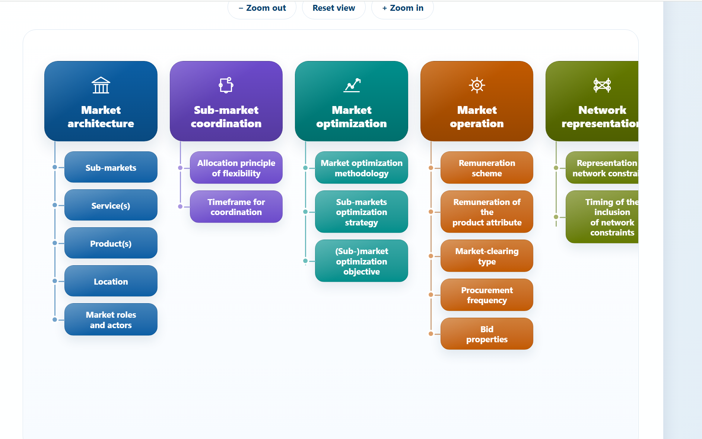

Start
A network need emerges
Congestion, voltage problems, hosting-capacity limits, new connection demand, or a reinforcement need must first be described by location, timeframe, duration, and certainty.
DSO flexibility procurement at distribution level
The road to flexibility is not a single market; it is a sequence of choices about investment, obligation, price, access, and explicit procurement.
CEER identifies four main ways for DSOs to access third-party flexibility: rules-based approaches, connection agreements, network tariffs, and market-based procurement. These instruments can be used separately or together, while network reinforcement and DSO-owned resources remain part of the wider solution set.
We warmly invite your expert feedback to sharpen the framework for research, regulation, and implementation. Your experience can help identify unresolved gaps, test interactions between mechanisms, and develop integrated practical approaches for European distribution systems.
The complete flexibility-acquisition landscape
Flexibility begins with a network need, not with a preferred instrument. A DSO should first compare conventional reinforcement, DSO-owned resources, and access to third-party flexibility. CEER groups the third-party routes into four categories: rules-based approaches, connection agreements, network tariffs, and market-based procurement. The road below is a decision pathway - not a mandatory chronology - because several mechanisms may coexist when their boundaries and interactions are clear.
Start
Congestion, voltage problems, hosting-capacity limits, new connection demand, or a reinforcement need must first be described by location, timeframe, duration, and certainty.
First comparison
Flexibility should not be treated as a universal replacement for infrastructure. The DSO compares wires, operational measures, owned resources, and third-party flexibility on whole-system cost, reliability, timing, and long-term value.
Administrative path
Mandatory technical or behavioural requirements may provide a transparent backstop when incentive-based solutions are unavailable or ineffective. Because the obligation is imposed rather than voluntarily contracted, proportionality, legal basis, and user protection are central.
Selected deep dive - implicit signal
Tariffs can influence routine use of the grid and reduce the flexibility that the DSO later needs. The response is implicit: no specific activation is contracted, and effectiveness depends on actual customer flexibility and interaction with other price signals.
Open tariff-design review →Selected deep dive - access condition
Non-firm or conditional access can connect new demand, generation, or storage before full firm capacity is available. It makes access rights, curtailment, compensation, control, and the path to reinforcement explicit.
Open connection-agreement review →Selected deep dive - explicit procurement
The DSO explicitly contracts a measurable service from network users or intermediaries. Competitive procurement is attractive when it is liquid, cost-efficient, neutral, transparent, and operationally compatible with other markets.
Open theoretical market framework →Destination
The final design must define when each mechanism is appropriate, how signals are prioritized, how double charging or double reward is prevented, and when reinforcement remains the efficient solution.
Why we selected three mechanisms for deeper research
Rules-based approaches remain an important part of the CEER landscape, but this platform concentrates on three mechanisms that create the most distinctive and interactive design interfaces: a price signal, an access agreement, and an explicit procurement process. Together they cover the journey from influencing ordinary behaviour, to allocating scarce connection capacity, to purchasing a verified service.
Broad, preventive, and implicit. It can reduce future needs, but raises difficult questions about granularity, fairness, customer response, rebound, and coordination with explicit markets.
Contractual, locational, and binding. It can unlock capacity quickly, but requires defensible curtailment rights, compensation, operational control, and a credible reinforcement pathway.
Explicit, targeted, and measurable. It can reveal the value of flexibility, but depends on products, liquidity, clearing, coordination, network representation, settlement, and regulatory neutrality.
A customer can be exposed to a network tariff, bound by a connection condition, and eligible to sell a local service at the same time. The difficult questions concern signal priority, baselines, double commitment, liquidity, compensation, cost recovery, and the boundary between flexibility and reinforcement.
Three expert-review environments
Each mechanism page first explains the definition, philosophy, practical value, opportunities, and risks. It then opens dimension-specific feedback environments so European experts can challenge assumptions, identify implementation gaps, and propose evidence-based improvements.
Review signal granularity, customer response, fairness, and coordination with explicit procurement.

Review access rights, curtailment, compensation, operational control, and market interaction.

Review architecture, coordination, optimization, operation, and network representation.
Your expertise is the next turning point
We are first inviting experienced European researchers, regulators, DSOs, aggregators, retailers, customers, and flexibility providers to test the logic of this platform. Your feedback can help us expose missing dimensions, distinguish national choices from transferable principles, and build shared research lines that move from conceptual gaps to implementable regulatory and operational solutions.
Complete reference library
The library retains the previous TMF resources and adds the new procurement-mechanism documents.